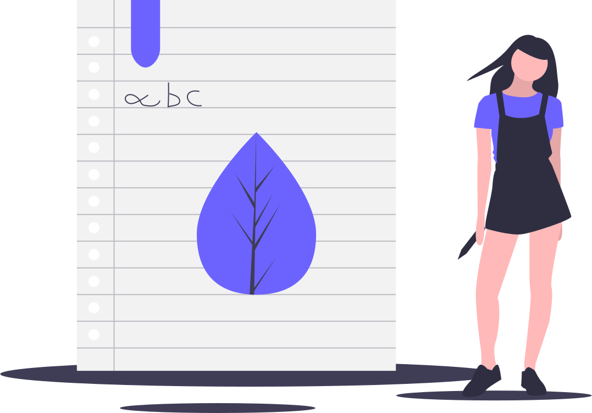

Write a book: At least one in your lifetime.
You’ll discover who you are; unless you’ve tried it.

Living in this world with 7.8 Billion others, you hear that number; each individual with there own life story and putting each one’s creativeness forward to paper in your solace; can actually be a relief and thus a new writer is born.
Writing a book considered as a skill but for me it’s upskilling. Listen, everyone can be a writer. Each one of us have a story to share. In fact, more stories to put forward. But the truth to write these stories, first you need to start write. Here come the prior stepping stones– Dedication and Passion.
By its very nature, Writing is an introspective and thoughtful activity. You don’t have to complete a book in a month or two; take your time. The more time you take in writing, the more you experience. If you’re an amateur, starting to write — go for your trajectory of life. Many people think they need to do something massive or be famous to write about their life, That’s not truth at all. The reason behind writing about your life is that you have a real story; something worth changing lives of others with your trial and tribulations.
Even you aren’t ready for a memoir, thou still have a valuable piece of short influential timeline, experiences or the knowledge gained that can help others; can be pen downed. It’s hard to peek inside, one of the hardest things in our life is to look inside ourselves. The harder you self-reflect, the more you discover who you been these all time. It can be objected a time when we evaluate ourselves.
Not to mention writing a memoir.
The most important thing to write a book about yourself is to get really, really honest and dig into the raw and deep parts about yourself. Nobody wants a book about you that’s all sunshine and rainbows because that’s not real life.
If You’re writing about yourself, here are some tips.
- Decide what you need to write about yourself or a part of it.
- Self-reflect your own life
- Specify the experiences you want to share
- Create a mind-map of experience to connect
- Take those ideas and starts to write an outline.
Through writing, you’ll gain perspective towards what really matters you. It will also teach you, the unique value of your own willpower.
Writing a book is a way to touch your thoughts, values, and motivations. This simple act of writing can perish to measure the depths of your discipline and efforts. Because, writing is cheaper than a therapy.
All that counts is that you get your first word on paper, and then a word after that. You owe it to yourself to explore your passion and write a book. When you’re writing about something you love, it won’t feel like work.
Now comes the hectic, tasks of drafting and publishing.
A shady statistic, only 1% of world population ever publishes a book.
No matter what you write a book about, whether you published it or not; that you write will open the door to your inwards or for more ideas. You’ll educate yourself on a broad array of ideas to tackle more obstacles, Life thrown at you.
Writing a book is leaving your comfort zone. The only way you grow as a person is by forcing yourself to leave your comfort zone.
Time to touch the sky — write a book yourselves. Discover who you really are.
This article was original published on Medium dated Sep 15, 2020. If you can check my Medium space.